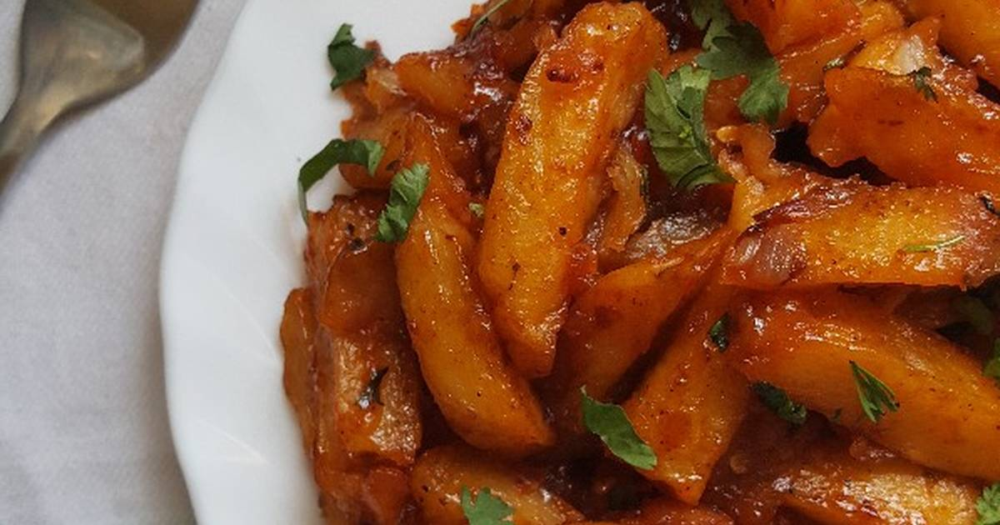

Chips Recipe

Description
Chips is the most favorite fast foods in Kenya and is available at a cheap price. It is can be taken at any other
time of the day!
Ingredients
- 1 kg potatoes
- Bunch dhania
- 1 tsp garam marsala
- 1 tsp paprika
- Chili tomato sauce
Steps/Procedure
- Peel and chop potatoes the french fry way
- Boil the potatoes on low heat till halfway done. Drain hot water and run cold water to stop cooking process.
Place in fridge ready to be deep fried.
- Meanwhile chop your vegetables ready for making masala.
- Deep fry chips till crispy and a bit golden.
- In another pan heat cooking oil add your vegetables,then add your chips. Garnish with coriander(fresh) and
serve with a cold glass of juice😋